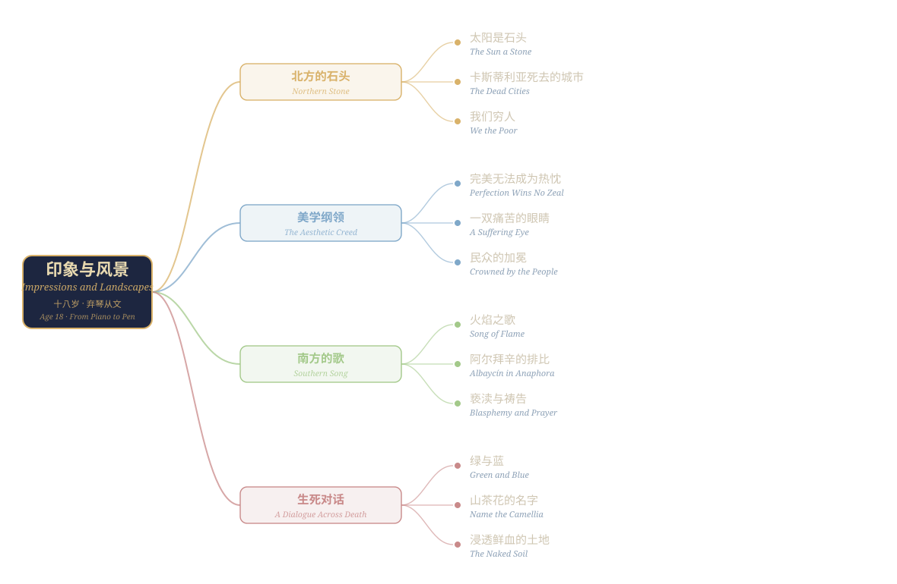

印象与风景
〇 · 书籍信息
基本信息
| 书名 | 《印象与风景》——洛尔迦 1918 年出版的第一本书：游历卡斯蒂利亚与安达卢西亚的散文集；阿维拉、客栈、加尔都西修道院、锡洛斯修道院、布尔戈斯陵墓、失落的城市、基督蒙难像、格拉纳达、花园 |
|---|---|
| 作者 | 洛尔迦（1898–1936），格拉纳达人——「二七代」旗手，《吉普赛谣曲》《血婚》作者；1936 年西班牙内战爆发后在家乡被杀，年仅三十八岁，身后成为西班牙诗歌的同义词 |
| 译者序 | 汪天艾《致一百年以前的你》——用塞尔努达挽歌开篇：「他们杀了你，因为你是我们荒芜地上的绿，我们暗沉空中的蓝」；谨以此书悼念洛尔迦遇害八十年 |
| 体裁 | 青年散文：风景速写 · 建筑冥想 · 民俗随笔（基督蒙难像一篇最像论文）· 排比诗化散文（阿尔拜辛一篇最像诗） |
| 一句话 | 十八岁的音乐家把一路风景写成散文，从此弃琴从文——这本书里埋着一个诗人全部的调式：太阳是歌手，废墟有鬼魂，死亡是唯一的主角 |
一 · 核心主题总览
一册青年散文之下，是四组互相咬合的母题：① 石头与歌手（西班牙双声部）
北方的太阳「仿佛大地上的一块石头」，南方的太阳「开始引吭高唱自己的火焰之歌」——卡斯蒂利亚是死去的城市，安达卢西亚是活着的歌：洛尔迦一生的写作就是在这两个调式之间调音。
② 神圣与亵渎同街
阿尔拜辛的十字路口：修道院管风琴对面是喂山羊的骂声，妓女的下流话旁边是小女孩怜悯而神圣的歌——「一种又明媚又阴霾的疲惫，永恒的亵渎，持续的祷告」：这就是西班牙的心跳。
③ 完美无法成为热忱的对象
《基督蒙难像》的铁律：民众跪拜血肉模糊的基督像，因为伤口可见；理想化的身体无人感动——艺术的目标受众决定艺术的语法：瑕疵换眼泪，完美只收获礼貌。
④ 死亡作为美学资源（及其反噬）
他游历北方歌颂废墟与鬼魂，把死亡当成西班牙的悲剧意识来收藏；二十年后，他自己成了那片土地上最新的废墟——跋文一锤定音：「你死的时候，连这些都没有，只有赤裸的土地，浸透你的鲜血」。
二 · 第一段 楔子与沉思 · 出发的哲学—— 唤醒灵魂里深邃的湖 ——
楔子：诗歌存在于一切事物
十八岁的洛尔迦在楔子里立下全部创作的总纲：「诗歌存在于一切事物，丑陋的，美丽的，惹人厌恶的；难的是知道如何发现诗歌，如何唤醒灵魂里深邃的湖。」他甚至立了军令状：「要做梦。不做梦的人是不幸的，他们永远见不到光」——谦卑是给世界的，狂妄是给自己的。
◆ 语言学习 · 西语关键词 · 起点书
| Impresiones y paisajes | 原书名《印象与风景》——「印象」是音乐术语的借用：他还在用钢琴家的耳朵看风景 |
|---|---|
| atmósfera / 氛围 | 全书高频词——每座城市先有氛围再有轮廓：先调音，再取景 |
沉思：卡斯蒂利亚死去的城市
出发之前先有一篇总括冥想：阿维拉、萨莫拉、帕伦西亚——「空气似铁，阳光为那里的神秘与阴影披上无尽的悲伤」；判词是「卡斯蒂利亚死去的城市！万物之上还有一股沉重的气息饱含巨大的苦痛」。他把「神圣、恐怖和迷信」并排放着不加剪裁——这种并置正是西班牙的灵魂配方。
◆ 语言学习 · 地理 · 双焦点
| Meseta / 中央高原 | 卡斯蒂利亚所在的台地——「辽阔的中央高原上最威严最具卡斯蒂利亚风骨的城市」：石头调式的发源地 |
|---|---|
| 宗教裁判所 | 北方城市的黑暗资产——「这边是宗教裁判所，那边是大德肋撒出生的地方」：光荣与黑暗共用一块碑 |
红色的原野：太阳是石头
回忆旅行时他写下全书最凝练的风景句：「红色的原野，太阳仿佛大地上的一块石头。」太阳不是光源，是一块沉重、亘古不动的石头——这个比喻把西班牙的地理写成了命运；与南方「火焰之歌」对读，一冷一热正是洛尔迦的双声部。
◆ 语言学习 · 修辞 · 比喻
| 太阳是石头 | 名词性比喻的教科书——用名词写风景，少用形容词：一个比喻压过十行渲染 |
|---|---|
| 亚伯与该隐 | 原野的红色「掺揉进亚伯和该隐的鲜血」——兄弟相杀的原型：西班牙内战的地貌预言 |
三 · 第二段 石头之城 · 阿维拉 · 客栈—— 自觉渺小势微 ——
阿维拉：自觉渺小势微
走进阿维拉的城墙，他给自己立下参观礼仪：「在这个坐拥惊人力量的城市里，所有人都应该自觉渺小势微。」鹳鸟在城垛上做窝，「像一个童年故事蓦然成真」。「渺小势微」不是姿态表演，是他全部风景观的入口：先把自己缩小，风景才会放大。
◆ 语言学习 · 游历 · 礼仪
| 大德肋撒 | 阿维拉的圣女——「以免惊扰至高的大德肋撒的精魂」：城市因一位圣人定下音量 |
|---|---|
| 城墙上的鹳鸟 | 废墟与生命的同框——蛋与石头：与劳伦斯那卷的「一只蛋」隔库相望 |
卡斯蒂利亚客栈：我们穷人
在一间苍蝇成团、油脂能刮下一层的客栈里，卖炭人与怀孕的女店主低声对话——她没钱治姐姐的病，他反反复复只有一句：「我们穷人！穷人！」这是全书最刺耳的一句人声：贫穷在书里不是题材，是声部——它一直在背景里哼着。
◆ 语言学习 · 民俗 · 众生
| 「主人！主人！」 | 卡斯蒂利亚男人「天生的仆人」对旧封建主的残存忌惮——两个称呼写尽一个阶级 |
|---|---|
| 利摩日珐琅 | 小窑里「最纯粹的小件珠宝」——粗糙与华贵同屋：洛尔迦的取景器永远双焦 |
修道院群像：光、影与鬼魂
加尔都西、圣佩德罗·德卡尔德纳、锡洛斯——他一路看修道院，看的是「信仰基督的城市如何指引人们祷告」。在《废墟》一节他给出全书的方法论判词：「所有的废墟都有个慑人的故事。有的为人熟知，有的已被遗忘」——浪漫主义文学的鬼魂必须住在废墟里，因为废墟的精魂恰在于此。
◆ 语言学习 · 建筑 · 词根
| claustro / 回廊 | 修道院的心脏——「巨大而灰绿色的潮湿沿着哥特式的回廊伸展」：石头的呼吸 |
|---|---|
| ecos / 回声 | 「原野上遗失的回声在日渐塌陷的角落里筑巢」——声音是废墟的住户 |
四 · 第三段 美学纲领 · 基督蒙难像—— 一双眼睛 · 说得更多 ——
完美无法成为热忱的对象
全书最像论文的一篇，二十岁的洛尔迦写下艺术铁律：「完美永远无法成为热忱的对象，引人质疑的、令大众不安的才是表达。」民众跪拜血肉模糊的基督像，因为伤口可见；古典派的理想化身体无人感动——他甚至说民间工匠的基督像「从艺术的角度看很糟糕」，却「传递出令人恐惧的印象，是茫茫人群的深切所爱」。
◆ 语言学习 · 艺术 · 受众
| 热忱（fe） | 与「礼貌」对立的词——完美的作品收获礼貌，有伤口的作品收获眼泪 |
|---|---|
| 让大众思考 | 「艺术家唯一应该投身的就是让没受过教育的大多数人思考和感受」：二十岁的受众宣言 |
一双痛苦的眼睛
西班牙天才雕塑家的升级路线被他一语道破：把受难像的灵魂刻进眼睛里——「尽管身体的扭曲表达出很多东西，一双痛苦的眼睛说得更多」。莫拉的眼睛变形可怖，梅纳的呆滞望地，蒙塔涅斯的望天呼喊——把叙事重心从场面移到目光，这是他后来一切戏剧的方法论。
◆ 语言学习 · 雕塑 · 目光
| Gregorio Fernández 派 | 西班牙木雕圣像传统——血管、伤口、眼泪皆真材实料：为「可见的痛苦」服务 |
|---|---|
| 低垂的头颅 | 他提醒大师们丢掉的元素——「死亡永远是神秘的」：目光说完之后，还要留白 |
民众的加冕
「民众用自己的天赋和艺术灵感在这些形象里填满了无数传说故事」——破布玫瑰、拐杖、眼睛和发辫，头盖骨与蛇。这一节是理解洛尔迦未来道路的钥匙：他要做的正是「被民众加冕」的艺术——《吉普赛谣曲》传遍大街小巷，就是这个纲领的实现。
◆ 语言学习 · 预言 · 应验
| 深歌（cante jondo） | 他两年后与法雅共同推动的弗拉门戈深歌比赛——民众的声音成为他的诗行 |
|---|---|
| 谣曲（romance） | 西班牙口传诗体——《吉普赛谣曲》的形式基因在此已能听出 |
五 · 第四段 回乡 · 格拉纳达 · 跋—— 火焰之歌 · 山茶花 · 鲜血 ——
夏日破晓：火焰之歌
写到自己的家乡，文风骤然升温：「安达卢西亚的太阳开始引吭高唱自己的火焰之歌，万物耸动聆听。」羊叫「落在低音谱表上」，公鸡「记录绯红的破晓」，疯蝉「想在正午之前灌醉自己」——回到故乡，散文开始向诗变形；这本书之后，他果然再也不写散文了。
◆ 语言学习 · 音乐 · 调式
| 低音谱表 | 羊叫声落进的谱表——音乐家写风景先用耳朵：全书唯一的乐谱意象给了家乡 |
|---|---|
| 阿尔罕布拉宫 | 「古老塔楼化身亮着红光的启明星」——摩尔遗产的每日复活 |
阿尔拜辛：焦虑与悲伤的对照
摩尔旧区阿尔拜辛被他写成一座对照装置：「沃野和这座城市有多少平静与庄严，这个摩尔街区就有多少焦虑和悲伤。」排比轰炸——泉水的阿尔拜辛，凉亭的，柏树的，满月的，康乃馨的……把一个街区拆成万花筒；精神气候压缩成一句：「一种又明媚又阴霾的疲惫，永恒的亵渎，持续的祷告」。
◆ 语言学习 · 排比 · 测绘
| Albaycín | 阿尔拜辛——格拉纳达的摩尔旧城：联合国遗产，本书最华丽的一篇所在地 |
|---|---|
| 邪眼（mal de ojo） | 女巫们捕捉的对象——迷信在此不是猎奇，是街区的日常空气 |
山茶花与跋：名字即悼词
车站旁一株山茶被咖啡残渣浇死，他对小女孩说出全书最疼的一句对白：「山茶花！我的孩子，山茶花！」而书末跋文把死亡美学用在他自己身上：「费德里科·加西亚·洛尔迦，你死的时候，连这些都没有，只有赤裸的土地，浸透你的鲜血，再无其他」——他研究了一路的西班牙悲剧意识，最终以自身为标本入册。
◆ 语言学习 · 结局 · 闭环
| 山茶花 | 被毁的美好之物的名字——喊出它的名字，就是悼词：洛尔迦式的哀悼仪式 |
|---|---|
| 赤裸的土地 | 跋文的最后意象——没有陵墓、没有雕像、没有故事：西班牙悲剧意识的最新样本 |
六 · 人物图鉴与成长弧线—— 主角配角 · 一张表看穿 ——
主要人物
青年洛尔迦——十八岁的「音乐家」——游学四趟写成一本书：音乐开始变调成诗
汪天艾（译者序中的我）——2016 年的读者——用「致一百年以前的你」完成隔空对话：翻译是写给死者的情书
卡斯蒂利亚——不是人物胜似人物——石头、铁空气、死去的城市：全书的第一主角
格拉纳达——故乡与终点——火焰之歌的调式主音，也是 1936 年枪响的地方
阿莱克桑德雷（跋文中）——诺贝尔奖诗人——在跋文里为老友盖章：「死亡几乎是唯一的主题」
次要人物（功能位）
| 大德肋撒 | 阿维拉的圣女——一座城市的音量调节器 |
|---|---|
| 卖炭人与怀孕的女店主 | 客栈里的穷人二重唱——「我们穷人！穷人！」 |
| 圣十字若望 | 「出生在那里」的另一个圣名——光荣与黑暗同碑的证据 |
| 马蒂亚斯·格吕内瓦尔德 | 画恐怖耶稣的德国画家——被洛尔迦点名批评的「太过凡人」 |
| 安东尼奥·马查多 | 巴埃萨拜访的老师——游学途中的第一盏文学灯 |
七 · 主题与象征—— 每个道具都在说话 ——
| 石头 | 卡斯蒂利亚的通货——太阳是石头、教堂是石头、陵墓是石头：北方的全部语汇 |
|---|---|
| 绿与蓝 | 塞尔努达挽歌给洛尔迦的配色——荒芜地上的绿、暗沉空中的蓝：颜色即罪名 |
| 废墟 | 鬼魂的法定住所——「所有的废墟都有个慑人的故事」：浪漫主义的公共宿舍 |
| 山茶花 | 被毁的美好——咖啡残渣浇在黄玉色的花瓣上：文明的细节性死亡 |
| 火焰之歌 | 安达卢西亚的调式——太阳歌手、万物听众：南方对北方的全面反调 |
| 眼睛 | 基督像的升级件——「一双痛苦的眼睛说得更多」：从场面到目光的表达革命 |
八 · 写作手法赏析—— 怎么写，就能怎么学 ——
① 双焦取景法
每座城市先写氛围再写轮廓、神圣与恐怖并置不加剪裁——「这边是宗教裁判所，那边是大德肋撒出生的地方」：并置即立场。
② 名词性比喻
「太阳仿佛大地上的一块石头」——用名词写风景少用形容词：一个比喻压过十行渲染。
③ 排比测绘法
「泉水的阿尔拜辛，凉亭的，柏树的，满月的……」——把一个地方拆成十五个偏正短语，测绘精度超过任何攻略。
④ 预言式结构
楔子做梦、正文收尸、跋文验尸——这本书的结构在 1936 年全部应验：读第一本书等于看人生岔路口。
九 · 名段欣赏—— 原文精读 · 逐段赏析 ——
十 · 金句摘录—— 13 条 · 中英对照 · 带出处 ——
"所以他们杀了你，因为你是"—— 译者序 · 塞尔努达挽歌
"我们荒芜地上的绿，"—— 译者序 · 塞尔努达挽歌
"我们暗沉空中的蓝。"—— 译者序 · 塞尔努达挽歌
"诗歌存在于一切事物，丑陋的，美丽的，惹人厌恶的；难的是知道如何发现诗歌，如何唤醒灵魂里深邃的湖。"—— 楔子
"要做梦。不做梦的人是不幸的，他们永远见不到光……"—— 楔子
"卡斯蒂利亚死去的城市！万物之上还有一股沉重的气息饱含巨大的苦痛。"—— 沉思
"红色的原野，太阳仿佛大地上的一块石头"—— 沉思
"我们穷人！穷人！"—— 卡斯蒂利亚客栈
"完美永远无法成为热忱的对象，引人质疑的、令大众不安的才是表达……"—— 基督蒙难像
"尽管身体的扭曲表达出很多东西，一双痛苦的眼睛说得更多……"—— 基督蒙难像
"安达卢西亚的太阳开始引吭高唱自己的火焰之歌，万物耸动聆听。"—— 格拉纳达 · 夏日破晓
"山茶花！我的孩子，山茶花！"—— 花园 · 车站
"费德里科·加西亚·洛尔迦，你死的时候，连这些都没有，只有赤裸的土地，浸透你的鲜血，再无其他。"—— 跋文
十一 · 拓展阅读—— 原文 · 词条 · 译文 ——
原文与文本
- Lorca — Wikipedia —— 生平、1936 年遇害始末与二七代群像
- Impresiones y paisajes — Wikipedia —— 本书西语原版与出版背景（1918）
主题与延伸
- Gypsy Ballads — Wikipedia —— 《吉普赛谣曲》——本书孕育的音乐性在诗中爆发
- Generation of '27 — Wikipedia —— 二七代——达利、布努埃尔、阿莱克桑德雷的同代星图
十二 · 个人感悟与心得—— 三点心得 ——
石头 · 火焰 · 山茶花
① 审美是在一切事物里发现诗的能力
楔子的总纲不是修辞口号而是筛子标准：筛掉「丑陋、惹人厌恶」的取景器，筛掉的是一半的世界。灵魂之湖的深浅，决定你人生素材库的库存量。
② 瑕疵换眼泪，完美只收获礼貌
《基督蒙难像》这条铁律适用于一切表达：做内容、做产品、做人——敢留毛边的人，才换得到真心；不敢留毛边的完美，只配收获掌声。
③ 把「恐怖」写下来是为了不让它重演
洛尔迦收藏死亡美学，最终被死亡收藏——阅读者的责任在跋文里：记录悲剧不是排练悲剧，是给后来的人画警戒线。
—— 洛尔迦死于 1936 年 8 月 19 日凌晨，格拉纳达。他的名字从此就是西班牙诗歌。译者序里引张枣的句子作结：「死也只是衔接了这场漂泊」。
十三 · 一页速查（复习用）
| 全书骨架 | 两线：明线是 1916 游学（石头之城→客栈→修道院→蒙难像→格拉纳达），暗线是译者序与跋文的生死对话 |
|---|---|
| 核心命题 | 诗歌存在于一切事物；完美无法成为热忱的对象；一双眼睛说得更多 |
| 必读篇目 | 楔子 → 沉思 → 基督蒙难像 → 阿尔拜辛 → 跋文（五篇即能拼出完整的青年洛尔迦） |
| 三大符号 | 石头（北方）· 火焰之歌（南方）· 山茶花（被毁的美好） |
| 一句话总结 | 他研究了西班牙的悲剧意识——最后以自身为标本入册 |
十四 · 全书思维导图—— 一图纵览 ——

一图纵览全书骨架 · 中英双语对照 · 手机端可左右滑动查看全图